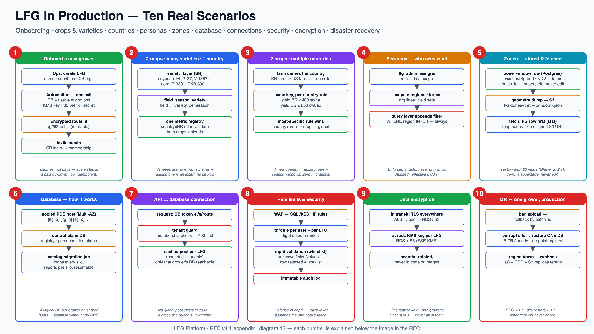

A standalone LFG platform (UI inside Seed Selector + NestJS backend) for large
farm growers. Each LFG gets its own data silo and its own route in Seed Selector — a dynamic encrypted
route id (…/g/9f3ac1…), no readable name and no real id in the URL. The LFG uploads its field + variety data through a
mapping UI; the platform then runs AgInsights batch jobs to compute FVA / zones per
field and stores every historical season window. Varieties are managed as a
layer per country / crop / LFG. Cropwise Base provides login and field identity —
we store only its reference IDs, never field geometry. LFG admins control who sees what
via personas. No data ever crosses between LFGs.
sysFieldId, orgId) — no field geometry, no mirrored master data./g/9f3ac1…), nothing guessable. Renders; never joins.| Boundary rule | Meaning |
|---|---|
| Reference-ID only | Cropwise Base remains the owner of field identity and geometry. LFG keeps cb_field_ref / cb_org_ref and resolves display/geometry from CB when the UI needs it — nothing to sync, nothing to drift. |
| Inbound & async | AgInsights is called by batch workers only. A user request never waits on an external system. |
| No cross-LFG path | No service, job or credential reads two silos. Any future cross-LFG benchmarking is a separate governance decision + design — explicitly out of scope here. |
The chain is: variety → field → zones/FVA. Varieties are a managed layer per
country / crop / LFG; every variety record points at a field (cb_field_ref);
every field accumulates zone/FVA results per season window. The reference dataset for the
shape is bgf-records.json (fetched and profiled: 391 records, 2023–2026, 6 regions,
65 varieties).
variety_layer (country, crop, lfg-scoped)
variety, variety_tags[], catalog_ref?
field_ref
cb_field_ref (sysFieldId) ← identity from CB
cb_org_ref, display_name, region, area_ha
-- one LFG spans MANY CB orgs: registry holds cb_org_refs[]
match_meta (matched_by, confidence)
field_season_variety -- variety ⟷ field per season
field_ref, season_year, variety
fact_rows -- metrics as rows, batch_id on each
(field_ref, season_year, metric_key, value, batch_id)
zone_window -- one row per field × window
field_ref, label ("2018-2023"),
date_start, date_end -- e.g. 15 Apr 2026 → 15 Oct 2026
vxc, heterogeneity, consistency,
zone_count, paf_spread, ndvi_p10..p90,
is_record_year, geometry_s3_key, batch_ids3://lfg-<id>/raw/<batch>.csv -- uploads, versioned
s3://lfg-<id>/fva-zones/
<cb_field_ref>-<window>.json -- full zone dump:
geometries + per-zone
PAF + NDVI percentilesYes — S3 for zone storage is the
right call, and your data already works this way (geometryFile:
"fva-zones/<sysFieldId>-2018-2023.json"). The rule: Postgres holds what you
filter/sort on (vxc, pafSpread, NDVI percentiles, window dates — small, indexed rows);
S3 holds the heavy immutable payloads (zone geometries, full AgInsights responses, raw
uploads). Benefits: cheap versioned storage, lifecycle rules = the backup policy,
replay-from-raw recovery — and PostGIS stays optional until real spatial queries appear.
| bgf keys | Lands in |
|---|---|
sysFieldId, orgId, field, region, areaHa, sysFieldMatchedBy/Confidence | field_ref — CB reference + display metadata + match provenance |
variety, varietyTags, year | variety_layer + field_season_variety |
yieldPerAc, tuberScore, returnPerAc, solids, soil attributes (ph, cec, omPct, soilP/K, soil-type percentages…), rotation, irrigation, distances | fact_rows — one row per metric, validated by the country/crop registry, stamped batch_id |
fva["2018-2023"] → vxc / heterogeneity / consistency, zoneCount, pafSpread, ndviMean.p10–p90, isRecordYear | zone_window rows (label + canonical dates) |
fva[..].zones[] (per-zone PAF + NDVI percentiles) + geometry | S3 fva-zones/<ref>-<window>.json; geometry_s3_key points at it |
productivityByYear, zoneSummary, indicesSource/Status, dataTrust | derived/serving projections — computed from zone_window + S3 dumps, never hand-stored |
Reference data comes from the LFG: season-window
definitions per country/crop (delivered by the LFG — today via email, entered through an
audited admin screen), the variety layer (purely LFG-provided, no catalogue seeding), and
exact field names (the LFG supplies the authoritative name, so CB-ref matching is
expected to be exact; the worklist handles the rare mismatch). Window keys in the wild are year-ranges
("2017-2022" … "2021-2026") and the business speaks in date spans ("15 Apr–15 Oct 2026";
"12 Oct–15 Jan 2027" for southern-hemisphere seasons). zone_window therefore stores
both: the label for display/compat, and canonical date_start/date_end for
querying — cross-hemisphere seasons cost nothing.
cb_field_ref / variety layer).batch_id; FK-safe rollback as a unit; raw file stays in S3 for replay.s3://lfg-<id>/fva-zones/<ref>-<window>.json; indexed metrics (vxc, heterogeneity, consistency, pafSpread, NDVI percentiles, zone_count) into zone_window with label + canonical dates.zone_window be
one table and the S3 dump one schema — country- and crop-agnostic.…/g/9f3ac1…): no readable string, no real internal id in the URL. The registry maps token ↔ LFG; tokens are rotatable.(user sub, lfg) membership on every request — a guessed or leaked URL 403s before any handler.dataTrust flags and suspect records are reviewed/overridden by the LFG's own admin/agronomist personas, with every override audited.| Layer | Picked | Note / alternative |
|---|---|---|
| Backend | NestJS (TypeScript) | guards/DI map to tenant-guard + pool-per-silo; alternative: plain Fastify if Nest feels heavy |
| UI | React in Seed Selector | per-LFG dynamic routes in the SS shell; Cropwise design system |
| Silo store | RDS PostgreSQL | logical DB per LFG on shared pooled Multi-AZ hosts (not instance-per-LFG). PostGIS optional — geometry lives in S3; add PostGIS only when spatial queries appear |
| Zone dumps / raw | S3 (versioned + lifecycle) | your instinct confirmed (§3): heavy immutable payloads, backup-by-lifecycle, per-LFG prefixes with scoped IAM |
| Jobs | SQS + EKS workers (KEDA) | interactive/backfill lanes, DLQ, per-LFG in-flight caps; EKS chosen for existing team/IaC capability, not superiority (ECS is the simpler greenfield pick) |
| Identity | Cropwise Base (JWKS) | token = who; personas/memberships = ours; near-real-time revocation (≤60 s) |
| IaC / CI | Terraform · CircleCI | sandbox + production; manual gate before prod |
Fresh numbering (supersedes the v3 backlog). Points: 1 ≈ half a day, 8 ≈ a week. Global DoD applies (tests on real Postgres, dashboards shipped with the feature, tenant-isolation test, provenance in one query).
| ID | Ticket | Key acceptance criteria | Deps | Pts |
|---|---|---|---|---|
| LFG-1 | Terraform baseline (VPC, EKS, RDS, S3, SQS, ECR; sandbox + prod) |
| — | 8 |
| LFG-2 | CI/CD: test → build → ECR (SHA) → sandbox → gate → prod |
| LFG-1 | 5 |
| LFG-3 | Observability baseline (structured logs with lfg + request id; alarm plumbing) |
| LFG-2 | 3 |
| ID | Ticket | Key acceptance criteria | Deps | Pts |
|---|---|---|---|---|
| LFG-4 | Cropwise Base JWKS verification (token = identity only) |
| LFG-2 | 5 |
| LFG-5 | LFG registry (route token + cb_org_refs[] — one LFG spans many CB orgs), memberships, tenant guard |
| LFG-4 | 5 |
| LFG-6 | Silo provisioning + catalog-driven migrations |
| LFG-5 | 8 |
| LFG-7 | Per-LFG dynamic route in Seed Selector — encrypted opaque route id (/g/…), registry-mapped, rotatable |
| LFG-5 | 3 |
| ID | Ticket | Key acceptance criteria | Deps | Pts |
|---|---|---|---|---|
| LFG-8 | Silo schema: field_ref (CB reference-ID only), variety_layer, field_season_variety, fact_rows, zone_window |
| LFG-6 | 5 |
| LFG-9 | Metric registry per country/crop, seeded with the bgf keys (yield, tuber, return, soil, NDVI, rotation…) |
| LFG-8 | 3 |
| LFG-10 | Variety-layer admin (per country/crop/LFG; tags; aliasing) |
| LFG-8 | 3 |
| ID | Ticket | Key acceptance criteria | Deps | Pts |
|---|---|---|---|---|
| LFG-11 | Upload path (presigned S3, async, streamed parsing, bounded memory) |
| LFG-8 | 5 |
| LFG-12 | Mapping UI (profile → columns→canonical → save template) + submit for processing |
| LFG-11 | 8 |
| LFG-13 | Entity resolution worklist (fields → cb_field_ref, varieties → layer) |
| LFG-12 | 5 |
| LFG-14 | Validation + reject report; chunked commit; FK-safe rollback |
| LFG-12 | 5 |
| LFG-27 | Scripted ingest trigger — cron schedule or manual internal API call; service identity; reuses saved templates; identical validate→commit path |
| LFG-12, LFG-14 | 3 |
| ID | Ticket | Key acceptance criteria | Deps | Pts |
|---|---|---|---|---|
| LFG-15 | SQS lanes + workers (interactive/backfill, DLQ, KEDA, per-LFG in-flight caps) |
| LFG-8 | 5 |
| LFG-16 | AgInsights batch client (internal API — no quota; backoff + S3 response cache kept for resilience) |
| LFG-15 | 5 |
| LFG-17 | zone_window store: label + canonical dates, indexed metrics, geometry dump to S3, supersede-not-edit |
| LFG-16 | 5 |
| LFG-18 | Per-LFG batch scheduler + Seed Selector login trigger (new fields → interactive lane) |
| LFG-17 | 3 |
| LFG-19 | Freshness/staleness UI states (computed-at badge, "zoning pending", outage = stale not broken) |
| LFG-17 | 3 |
| ID | Ticket | Key acceptance criteria | Deps | Pts |
|---|---|---|---|---|
| LFG-20 | Query API: variety ⟷ field ⟷ zone_window joins, filters at source, pagination |
| LFG-14, LFG-17 | 8 |
| LFG-21 | SS UI views on the per-LFG route (analysis, uploads, worklist, zone status) |
| LFG-20, LFG-7 | 8 |
| LFG-22 | Personas: LFG-managed roles + data scopes (region/farm/field sets), enforced in the query layer |
| LFG-20 | 8 |
| ID | Ticket | Key acceptance criteria | Deps | Pts |
|---|---|---|---|---|
| LFG-23 | Backups & DR: PG PITR + hourly→daily→monthly; S3 lifecycle = zone-dump policy (Glacier-IR at 2 y, retain 20 y); cross-region replication for S3 + ECR; region runbook; restore drill |
| LFG-14 | 5 |
| LFG-24 | Security pass (WAF, throttling, rotation, pgAudit, immutable audit log, sandboxed file parsing) |
| LFG-20 | 5 |
| LFG-25 | Dashboards + alarms (ingest failures, queue age, DLQ, pool saturation, AgInsights errors, backup freshness) |
| LFG-15 | 3 |
| LFG-26 | Pilot LFG live end to end + sign-off (reconciliation vs source files; ops cadence started) |
| all | 5 |
| Risk | Mitigation |
|---|---|
| Silo ops at scale | silo = logical DB per LFG on shared pooled hosts (not instance-per-LFG); all per-silo operations are catalog-driven jobs; tiering later is a placement policy, not a redesign |
| AgInsights outage | serving never depends on it — staleness badges, queued jobs drain on recovery, >24 h alarm to ops |
| Huge uploads | streamed parsing, bounded memory, chunked transactions under one batch_id, resume-from-chunk, FK-safe rollback |
| Noisy neighbours | per-LFG in-flight caps on both lanes; queue-age (not depth) is the alarm metric |
| Serving latency | zone metrics pre-computed as rows → indexed SQL; defined benchmark in LFG-20, load test in DoD |
| Region loss | runbook: rebuild from IaC + cross-region ECR/S3 replicas + PG backups; RPO ≤ 1 h, single-silo restore < 1 h, region RTO < 4 h (LFG-23) |
| Field identity drift over years | CB reference-IDs only + stored match provenance (matched_by, confidence); low-confidence matches go to the worklist, never auto-merged |
All ten answered (v4.1). Decisions recorded here; each consequence is already applied in the section/ticket named.
| # | Question | Decision | Applied in |
|---|---|---|---|
| 1 | AgInsights API contract | resolved internal API, no quota/cost limits — backoff + S3 cache kept for resilience only | §2, LFG-16 |
| 2 | Who defines season windows | resolved the LFG provides them (today via email); entered as reference data through an audited admin screen | §3 |
| 3 | Variety master source | resolved purely LFG-provided; no catalogue seeding; aliasing within the LFG's own layer | §3, LFG-10 |
| 4 | One LFG ↔ many CB orgs | resolved yes — registry holds cb_org_refs[]; persona scopes can follow org lines | §3, §6, LFG-5 |
| 5 | Direct inject | resolved upload UI plus a scripted trigger (cron or manual internal API) reusing saved templates; no direct grower-DB connection | §4, LFG-27 |
| 6 | dataTrust review | resolved the LFG reviews its own suspect records — admin/agronomist personas override, fully audited | §6, LFG-22 |
| 7 | Zone-dump retention | resolved keep the last 20 years; Glacier-IR after 2 years; nothing deleted before year 20 | §5, LFG-23 |
| 8 | Low-confidence field matches | resolved the LFG supplies the exact field name — matching to CB refs expected exact; provenance still stored; worklist for the rare mismatch | §3, LFG-13 |
| 9 | Cross-LFG benchmarking | recommendation keep it permanently out of scope for this version; the closed boundary is a selling point ("your data is never mixed"). Revisit only on an explicit, written business case — and then as its own governance track + design, which the silo architecture already permits without rework. No standing "future track" should exist meanwhile: an open door invites scope creep and weakens the isolation pitch. | §2 boundary rule |
| 10 | Per-LFG route branding | resolved a dynamic encrypted route id — no readable string, no real id in the URL; registry-mapped, rotatable; branding lives inside the page | §6, LFG-7 |
One picture of production life, numbered — and each scenario also exists as its own full-size 4K diagram, plus three sequence diagrams (upload & ingest, zone/FVA job, persona-scoped read): see the scenario & sequence gallery. The SVG of this poster zooms forever.

field_season_variety links each field to its variety per season; one country's metric rules validate both crops. Adding a variety is an insert, not a deploy.yield) carries different rules per country and the most-specific rule wins. A new country is registry rows + season windows — zero migrations.zone_window rows in Postgres for fast lists/filters; the heavy geometry dump lives in S3 and is fetched via presigned URL only when a map opens. 20-year history, supersede-never-edit.batch_id; a corrupted silo is restored alone from PITR/hourly backups and repointed in the registry; a lost region rebuilds from IaC + replicated ECR images + replicated S3. RPO ≤ 1 h, silo restore < 1 h — the other growers never notice.{kind=link}